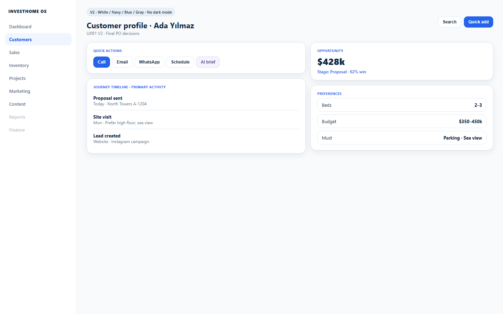

One person, one URL — Lead, Buyer, and Investor as badges on a unified profile with progressive disclosure.
One person, one profile. Advanced identity, UTM, and accreditation stay expandable so daily sales work stays fast.
Unifies lead detail, CRM contact, and investor record. Overview surfaces next action, active deal, and preference snapshot before deep fields.
Premium CRM profile: identity first, actions second, tabs for depth — not a form dump.

Primary mobile job: finish today’s queue — not recreate the desktop dashboard.
Optional Investor badge branches from opportunity without a disconnected record. Convert to investor = add role + fields.
| Action | Where | Outcome |
|---|---|---|
| Call / WhatsApp / Email | Action bar | Opens channel with context |
| Schedule | Action bar | Calendar event linked to person |
| Match units | Action bar | Inventory match panel prefills prefs |
| Done / Snooze follow-up | Next action card | Clears or postpones |
| Open in Sales | Active opportunity | Pipeline drawer / board |
Today lead, CRM, and investor UIs fragment history and force staff to relearn chrome. A unified profile with badges and progressive disclosure matches how sales actually work.
Visual package only. No routes, components, or APIs changed. Approve or request changes before any implementation.